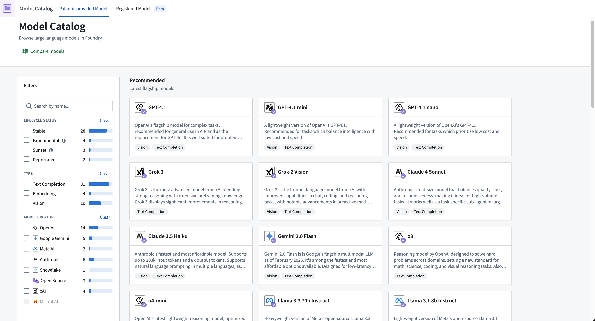
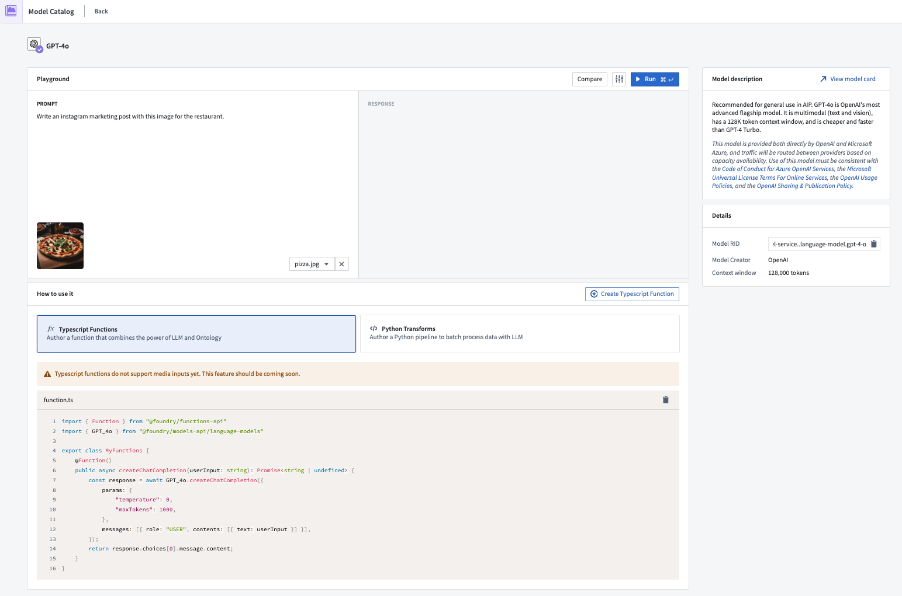
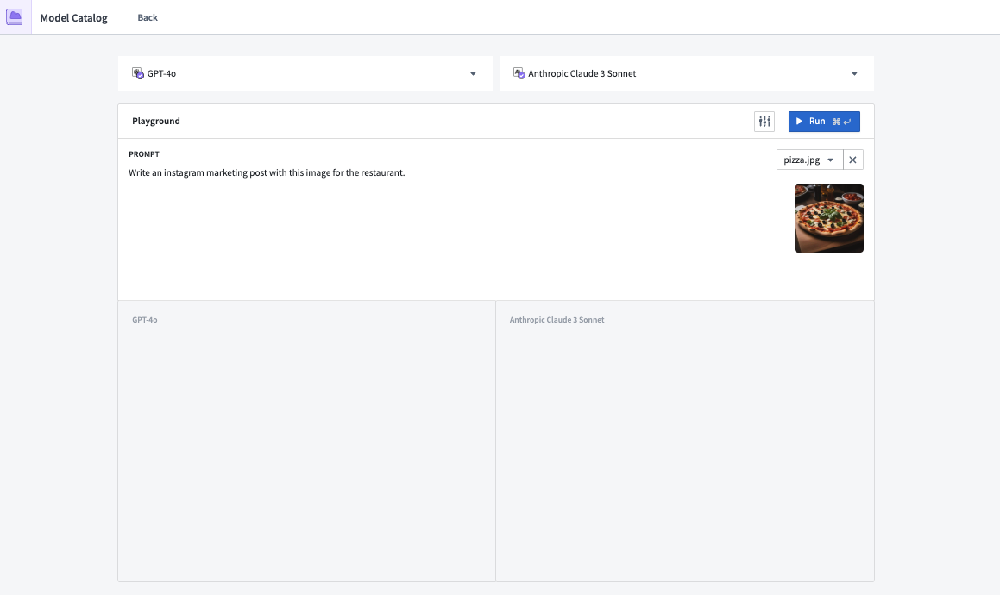

:::callout{theme="neutral"} You can enable Model Catalog in Control Panel. :::
Model Catalog is an AIP application in Foundry, created to help with discovery and orientation of all Palantir-provided models.
Model Catalog enables builders to:
:::callout{theme="warning"} Model Catalog currently does not include custom ML/AI models, only LLMs. You can find ML/AI models in Modeling Objectives. :::
Model Catalog has two main views:

The Model Catalog homepage is a discovery and navigation interface, displaying all large language models available for a user in their Foundry enrollment.
:::callout{theme="neutral"} Review an exhaustive list of available models in AIP. :::
There are a few ways to filter models on the homepage:
:::callout{theme="neutral"} Enrollment administrators can enable or disable Experimental models for their enrollment in the AIP settings section of Control Panel so Model Catalog only displays models within the Stable lifecycle stage. :::
Stable: A stable or generally available (GA) model is a reliable model endorsed by both the model provider and Palantir. These models offer robust functionality, guaranteed support, and are designed for long-term production usage. Regional availability for models varies based on the offerings for model providers. You can reference a comprehensive list of model availability by region in the supported LLMs documentation and information about each model's status in Model Selector. Palantir moves models from stable to sunset, and notifies users of that shift through Upgrade Assistant, after receiving the prescribed sunset date from the model provider.
Sunset: A sunset model will deprecate in the coming months, as determined and announced by the model provider. While sunset models can no longer back new workflows after their prescribed deprecation date, the model may still support existing workflows. Compared to their stable counterparts, sunset models will not receive the same level of technical support. Palantir moves models from sunset to deprecated, and notifies users of that shift through Upgrade Assistant, after receiving the prescribed deprecation date from the model provider. For more information on sunset models, review the model deprecation documentation.
Deprecated: Palantir removes, or deprecates, models from Foundry in coordination with the model provider after its sunset period expires. Deprecated models cannot support existing workflows, including new API calls, so projects must migrate to a stable model before a model's deprecation to maintain functionality. Foundry retains and makes accessible the deprecated model's historical data and logs. For more information on deprecated models, review the model deprecation documentation.
Type
Vision model: A vision model is trained to analyze and interpret visual input, enabling it to recognize objects, classify images, and support various computer vision tasks for image and video data.
Model creator
If a model is unavailable or grayed out, it means that it is not enabled for your enrollment. To enable a model, contact your platform administrator or Palantir representative.
Learn more about Model enablement.

Each model has an entity page with three main sections:

The Model Catalog comparison page allows builders to efficiently compare and evaluate the performance of various LLMs. The interface allows users to select two LLMs and test them on the same completion or vision tasks. This enables informed decision-making and allows builders to quickly select a model that is optimal for their workflow.